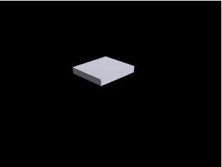

Contents
- This script uses an external program called povray to create beautiful renderings
- Some things you will need to do to use the plotting routines in
- To set up povray for use with this matlab interface, you will want to change a
- define a body:
- create a renderer:
- generate some images, translating and rotating the body around a bit:
- combine those images into an avi
- play the avi
This script uses an external program called povray to create beautiful renderings
of things in 3 dimensions. This might be useful if you want to show an animation of a prosthetic foot operating in 3d, or a 3d walking model. It is more annoying to use than matlab's 3d plotting, but the results can look pretty good, and this can help the viewer's understanding of what is going on, since humans are used to using cues like shadows and such when parsing 3d data from an observed two dimensional image.
what the functions in this folder do is stuff like: write a .pov file (which contains code in let's call it the "povray language"). call pvengine.exe, with the .pov file, which results in a .png. assemble the .pngs into .avis
All geometry to be rendered in povray must be specified as povray code. This library only draws rigid bodies, which each have a position and an orientation. The main .pov file, written by this function, passes position and orientation data to sub-povray .inc files, each of which defines the actual geometry associated with a rigid body. So you could have a 3 link walking model, with 2 legs and 1 pelvis. You would have to create, all on your lonesome, 2 files: leg.inc, and pelvis.inc, which each define an eponymous macro (see Body.inc for an example that you should just copy and paste). The macro must have 12 inputs (rotation-scale matrix, column 1, 2, then 3, and the translation vector). It is possible/recommended to create all the geometry (where the verteces are specified in Body.inc) by creating the model for each rigid body in solidworks, and exporting each as its own vrml (with the origin being the origin of the rigid body that the geometry represents). Then you can use a utility from off the internet, cross roads 3d, to convert each wrl into an associated .inc file. You can open the file as text, and copy the triangle definitions from it, and overwrite the triangles in, say, your leg.inc file with the triangles from your wrl.
You could then create PovRayBodys specifying the location of those .inc files, and then you can create a PovRayRenderer, and use it to render the bodies. A PovRayBody is also a RigidBody, so it has settable position and orientation vectors, so you can move them around in between frame renderings.
you can then use the more general function combineImageFilesIntoVideo to create an avi from the images.
Some things you will need to do to use the plotting routines in
hbclToolbox\Plotting\povray:
install povray: download the installer from somewhere like http://www.povray.org/download/ and run it. I have always agreed at the end to download and install the editor dlls as well.
if you are going to model your geometry in some 3d modelling program, you'll want to install the contents of xroads1.zip in this folder. However, I found that it didn't want to work on 64bit windows 7, but it did work in a virtual machine running a 32bit windows xp. So that's the setup I advise. The tool is very old and probably defunct, but it worked for me. Here's where I found it: http://synapses.clm.utexas.edu/tools/xroads/xroads.stm
To set up povray for use with this matlab interface, you will want to change a
few options inside povray. The matlab works by opening an instance of povray for each frame to be rendered (this was easier than figuring out how to read data from a file into povray and render out frames with one instance). I recommend a few things:
run povray
go to Render -> sound settings... -> uncheck the boxes this will keep povray from annoying you with sound each frame (optional)
go to options -> UNCHECK "keep single instance" this lets you run a bunch of povray renders in parallel (required?)
go to Render -> On completion -> Exit povray for windows This is so when you render a bunch of frames you don't have hundreds of povray instances hanging around (optional?)
in the upper left corner, you should see a dropdown box saying something like: 320x240, No AA or some resolution followed by some anti aliasing spec. This is where you specify the output properties for your rendering. If you want to do a quick, low quality render, you can set that here, or when you're happy with the geometry, cameras, lighting, etc, you can crank the resolution up to whatever you want. If you're running this script just as a test, I would leave it on some low resolution for speed.
projectsDirectory = 'C:/Users/jrebula/myProjects/'; addpath(genpath([projectsDirectory 'HBCL Gait Analysis Toolbox v1.3/']));
define a body:
includeFile = 'exampleFiles/Body.inc';
body = PovRayBody(includeFile);
create a renderer:
renderer = PovRayRenderer();
generate some images, translating and rotating the body around a bit:
frameRate = 30; tEnd = 2; ts = 0 : 1/frameRate : tEnd; imageFilenames = cell(1, length(ts)); for i = 1 : length(ts) t = ts(i); % body.orientation = body.orientation + [0.1 0.1 -0.05]'; % body.orientation = [t*1*pi, t*1*pi, t*1*pi]'; body.orientation = [t*1*pi, 0, 0]'; body.position = [cos(t*2*pi) 3 * cos(t*2*pi), 3 * sin(t*2*pi)]' * 0.01; imageFilename = sprintf('./exampleFiles/test%g.png', i); imageFilenames{i} = imageFilename; renderer.render({body}, imageFilename); end
combine those images into an avi
aviFilename = 'exampleFiles/testVideo.avi';
video = combineImagesIntoVideo(imageFilenames, aviFilename, frameRate);
play the avi
playAVI(aviFilename);